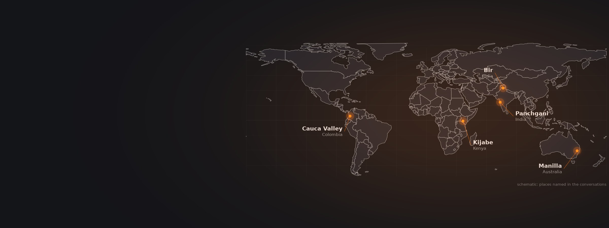
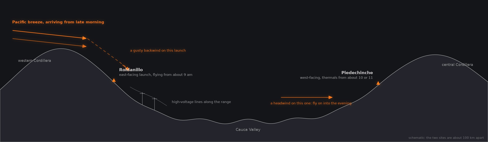
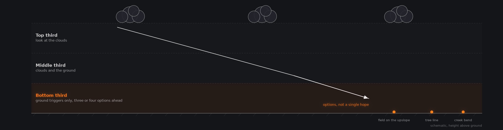
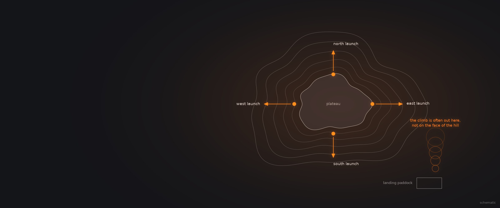

What Should I Know Before a Paragliding Trip Abroad?
Six pilots who live, guide or organise competitions in Colombia, Australia, the Indian Himalaya, India's Western Ghats and Kenya's Rift Valley: when to go, how the local air behaves, how to launch and land there, and how to get home.
Six conversations. A competition pilot who bought a hill with its own takeoff in Colombia, the pilot who built Mount Borah in Australia, a guide who has run Himalayan trips from Bir since 2007, a pilot who has made Bir home, the organiser of the Panchgani competitions, and a guide from Bulgaria who winters in East Africa.
The six conversations
Open any tile for chapters, quotes and links Navigating ColombiaPal Takats13 chapters
Episode 782 min
Navigating ColombiaPal Takats13 chapters
Episode 782 min Navigating AustraliaGodfrey Wenness13 chapters
Episode 352 min
Navigating AustraliaGodfrey Wenness13 chapters
Episode 352 min Navigating IndiaEddie Colfox7 chapters
Episode 436 min
Navigating IndiaEddie Colfox7 chapters
Episode 436 min Navigating India: Jigish Gohil (Bonus Ep)8 chapters
Episode 954 min
Navigating India: Jigish Gohil (Bonus Ep)8 chapters
Episode 954 min Navigating Panchgani (Pre PWC India)Vistasp Kharas12 chapters
Episode 1052 min
Navigating Panchgani (Pre PWC India)Vistasp Kharas12 chapters
Episode 1052 min Pre PWC KenyaNikolay Yotov9 chapters
Pre PWC KenyaNikolay Yotov9 chapters
Pilots who made a place their own
Pal Takats bought a hill with its own takeoff in Colombia, and Godfrey Wenness bought a mountain in Australia and spent years turning it into a site. In India, one guide has run trips to Bir since 2007 and another pilot has made it home.
Pal Takats first came to Colombia in 2011, on a wild card to what he says was the country's first Paragliding World Cup, and spent the same trip riding 3,500 kilometres through it on a motorbike. He kept coming back for competitions, and in 2017 flew about 100 kilometres down the Cauca Valley from Roldanillo to Piedechinche, which he calls probably the most beautiful flight in the valley. He preferred the quieter countryside there. A first purchase fell through over unclear paperwork, and within a week he had signed for another place, with his wife putting in money too, that has its own takeoff and top landing. The low, technical launch is not for everyone, he says, but his longest flight from it was about 250 kilometres, and on the right wind he can fly to a neighbour's garden in 10 to 15 seconds rather than drive.
Godfrey Wenness was already searching for a site in the early 1990s, with two aims, a school and a world record, when hang glider pilots' word of mouth led him to Mount Borah. After a trial season around 1992 and 1993 he took it on, bulldozed roads and cut launches, and after about five years of training flew the world record in November 1998, landing in Queensland 335 kilometres away. The mountain now has four launches, one for each wind direction, 16 kilometres of roads, and hosted the 2007 World Championships; he has taught more than 2,000 students there. Eddie Colfox, who started flying in 1992 and flew in India in the 1990s, came to Bir in 2006 after finding the Nanda Devi area unmanageable, and has run trips there since 2007. Jigish Gohil moved to Bir about a decade ago and wrote a book, Aloft and Unbound, about the rest of a pilot's life, for the friends and family who do not fly.
Seasons, and how far ahead you can plan
Colombia's best months are January and February, Bir's autumn draws hundreds of visiting pilots, and Panchgani fills the gap between. Australia rewards pilots who stay flexible, and two guests think their seasons are shifting.
In Colombia, Pal Takats rates December to March as the cross-country season, with January and February the most consistent and good flights into April; he also found July and August good, and for pilots not chasing records the Cauca Valley works all year. Bir's big season is autumn: Jigish Gohil counted about 800 solo pilots in autumn 2023, against about 200 when he arrived, because almost nowhere else flies consistently then; spring is stronger and quieter. Vistasp Kharas describes the circuit some visitors follow: Bir from October to mid-November, the coast of Goa, Panchgani from January to March, then back to Bir from March. In East Africa, Nikolay Yotov points out that the days are short: flights start around 11 and you need to think about landing by 5 or 5.30, before it gets dark.
Australia is the exception. Godfrey Wenness says there is no single month to book: good cross-country can come any time from October to March, and groups have flown out to chase records and gone home with nothing. The big flights in the east come when a large high sits over central Australia and pushes a southwest to southeast flow across the eastern half, often with cloud streets, and a local can usually see that seven to ten days ahead. Visitors should book two or three weeks and stay mobile, because of the three main areas, the Victoria and New South Wales border, central west New South Wales and his own northwest, one is usually working. He finds the models good at forecasting bad weather and weak at picking a great soaring day, especially far inland. Eddie Colfox and Nikolay Yotov both see seasons arriving later, and both present it as their own observation: in Bir the good flying used to start in late September and now starts nearer 10 October, running later into November, and Yotov sees Bulgaria's seasons shifted by two or three weeks.
Every site has a wind that changes the rules
In the Cauca Valley it is the Pacific breeze, at Panchgani the switch to the sea wind, at Bir the step into the back ranges, and in Kenya's Rift Valley the afternoon easterlies. When it arrives decides where you launch and where you land.
Pal Takats explains the Cauca Valley's two personalities. Roldanillo faces east, so pilots can launch from about 9 in the morning, and the best of them chase 200 kilometre triangles between the western and central Cordilleras. But the Pacific breeze comes over the western range, somewhere between 11 and 1, as a strong, gusty backwind on launch, much like foehn in the Alps, and pushes further out into the valley as the day goes on, so Roldanillo gives you one shot in the morning. Piedechinche, on the other side of the valley near Cali, faces west: thermals start around 10 or 11, the same breeze arrives there as a headwind, and pilots fly on into the evening. At Panchgani, Vistasp Kharas describes east winds in the morning and a sea wind that pushes in from the west in the afternoon; heated rock faces can keep pulling thermals against it, so smoke in neighbouring valleys can blow in opposite directions. He climbs high first to find the day's shear layers, typically around 1,800 to 2,100 metres and again around 2,600 to 2,700.
At Bir, Eddie Colfox's rule of thumb is that everything steps up by about a third when you cross from the front ridge into the back ranges: altitude, thermal strength, roughness and cold, with the thermals perhaps doubling. Valley winds matter far more there, and a storm in the next valley can send a gust front down into yours; towards Manali, the wind that spills over the Rohtang pass can make the low air rough and reverse the logic of a landing. In Kenya, Nikolay Yotov's competition launch at Kijabe, a conical volcanic hill in the Rift Valley near Lake Naivasha, has a window that closes when the afternoon northeasterlies arrive as a backwind, which is why he capped the field at 60. The same easterlies wash out Kijabe and Mount Longonot late in the day, so flights should end elsewhere, and he still bombs out at times under good-looking clouds in the lee of the Aberdares.

After Pal Takats, Episode 2, chapters 5 and 7. Schematic: the two sites are about 100 km apart.
Fly the site the way the locals do
Alpine habits can work against you: at Mount Borah the climb is often out over the flats, at Bir the launch is nil-wind, and in Kenya the cone cannot be soared. Over flat country, Godfrey Wenness manages every long glide in thirds.
Godfrey Wenness sees the same mistake from visiting Alpine pilots: they feel a puff up the face, launch, scratch along the hill and land in the paddock while a novice climbs out from low over the flats. With only 400 or 500 metres to play with, his advice is to let someone else be the wind dummy and, if nothing works straight away and the hill is not soarable, to head out towards the landing area with your height, reading the mountain as if you had arrived on a cross-country from five kilometres out. At Bir, Jigish Gohil says the launch is almost always nil-wind, so practise that before you come, clear the launch quickly and do not lay out in front of anyone. Good pilots leave the busy house thermal for the next small ridge, because almost every knob along the range works. At Kijabe, Nikolay Yotov explains, you cannot soar a cone: fly out to meet the thermals feeding the one above the hill, sometimes on speed bar to put height under you, but not so far that you sink into the stable lowlands.
Out over the Australian flats, Godfrey manages height in thirds. Arriving in the top third of the band, you look at the clouds; in the middle, at clouds and ground; in the bottom third, only at ground triggers, with three or four options ahead. By about 300 metres above the ground you should already be searching over a trigger, and it pays to read the slope: a field that falls away downwind, even by a few degrees, will not release its thermal until the ground rises again. Take the one metre climb you need rather than gliding on for a five you may never reach. Cloud streets there often line up with the north to south ridges, but you can fly out of phase with them and reach every cloud as it decays. At Panchgani, Vistasp Kharas flew about 100 kilometres to Kamshet on a high EN B in about two and a half hours from his first good thermal, with glides of 7 to 10 kilometres; he thinks B and C wings suit the site and an A would frustrate you.

After Godfrey Wenness, Episode 7, chapter 8. Schematic.

Forget that it is a launch. Imagine you have arrived here on a cross-country from five kilometres out and ask where the thermal would trigger. If nothing works straight away, take your height out to the flats.
Godfrey Wenness, Mount Borah Episode 7, paraphrased
A launch for every wind, and the climb often out over the flats rather than on the face.
Landing out, and getting home
Power lines and terraces in India, hidden fences and long walks in Australia, a crowd gathering in a Colombian village: every region has its landing hazard, and a way home that the locals trust.
In India, Eddie Colfox and Vistasp Kharas both put power lines first. Lines run everywhere around settlements, and small ones appear at the last moment, so decide early, keep looking until your feet are on the ground, and land a little away from villages; Kharas looks for the poles and their shadows, because the wires themselves are hard to see. Colfox adds terraces: landing upslope onto one is dangerous, and landing downslope the lift may never let you down, so treat a terrace like a slope landing. Kharas asks pilots to avoid standing crops, especially sugarcane, and to choose fields that have been cut. In Colombia, Pal Takats has seen low pilots forced under the power lines along the Roldanillo range and into a valley with only slope landings, and warns against pushing back to land close to town, where the afternoon wind is gusty; land out near the main road instead. Around Mount Borah the lines are few and run between properties, but Godfrey Wenness warns of fences hidden in grass a metre or two deep in a wet season, and of properties so large that a pilot who lands between roads can face a long walk: carry water.
Getting home is usually easy and cheap. Around Mount Borah, pilots hitchhike along the main roads that most cross-country lines follow, and WhatsApp groups share spare seats on retrieves. In Bir, a WhatsApp and Telegram network organises taxi shares, four pilots to a small car. Around Panchgani, shared jeeps run to the nearest town for a few rupees; Kharas pays for a second seat for his glider and asks visitors not to overpay and spoil the system. In Kenya's Rift Valley, Nikolay Yotov says someone on a motorbike usually turns up wherever you land, and his competition encourages pilots to ride with them so local people earn from it. The security advice is consistent. Pal Takats, who speaks Spanish and has never had a problem, has heard of pilots losing phones, never of anyone being hurt, and suggests learning basic Spanish, smiling and putting electronics away; Yotov suggests carrying little money. Wenness and Kharas describe their regions as safe for women flying alone: Wenness says many women fly at Mount Borah, and Kharas that few solo women have come but he sees no special risk.
Worth remembering
Each one links to the chapter where it is saidPay for the local knowledge
Eddie Colfox is blunt: as far as he is concerned, a pilot with 100 to 300 hours is still a beginner. Pay an experienced guide or join a group, and you will fly five hours a day instead of two, learn more and be safer. Talk to people, study the local tracklogs, and note what time the clouds form: early clouds usually mean they will grow big later.
Eddie Colfox A short season, and a changing climateBefore you go
Plan for flexibility, not a date
In Australia there is no reliable month. Book two or three weeks and move between regions.
Godfrey Wenness What Australia offers a paragliderPractise the local launch
Bir is almost always nil-wind. Arrive able to launch cleanly without help from the breeze.
Jigish Gohil Standing on takeoff, what to expectPack for a night out
Before crossing into Bir's back ranges: an SIV, a tent and sleeping bag, and the fitness to walk out.
Jigish Gohil Standing on takeoff, what to expectIn the air
Leave the hill with your height
At Mount Borah, if the face is not working, head for the flats rather than scratching.
Godfrey Wenness What more do you actually needBelow 1,800 metres, look for a field
Vistasp Kharas's rule at Panchgani for anyone new to its winds. The hilltops are at about 1,100 to 1,200.
Vistasp Kharas Mistakes visiting pilots makeBe very careful of cloud
Eddie Colfox's advice in the Himalaya, and do not follow someone into one just because they are there.
Eddie Colfox Being brave enough to go out and do itOn the ground
Land out rather than push home
Roldanillo's afternoon wind makes landing near town gusty. Pal Takats lands out near the main road instead.
Pal Takats What a good day gives youWatch for the poles
The wires are hard to see from the air. Their poles and shadows are not.
Vistasp Kharas Hazards on retrieve and top landingLearn a little of the language
A few words of Spanish and a smile change how a Colombian village receives you.
Pal Takats Outlanding, and standing outQuestions these conversations answer
Each answer links to the chapter of the episode where the guest says it.
When is the best time to paraglide in Colombia?
For cross-country, December to March, according to Pal Takats, with January and February the most consistent and good flights possible into April. He has also found July and August good, when there is a competition too. If you are not chasing a personal best or a 200 kilometre triangle, the Cauca Valley can be flown all year, and some operators run tours year round.
Pal Takats What a good day gives youIs Roldanillo or Piedechinche better for a new pilot?
Piedechinche, in Pal Takats' view. Roldanillo is a strong east face with thermal hot spots early in the day and is not a place for simple top to bottom flights. Piedechinche faces west, its thermals start soft around 10 or 11, the landing field is huge, the shuttle back up takes about 20 minutes, and the Pacific breeze arrives there as a headwind rather than a backwind.
Pal Takats Why the day starts so earlyWhen is the paragliding season in Bir Billing?
Autumn is the main season. Eddie Colfox, who has flown there since 2006, says it now runs later than it used to. Good flying once began in late September, but the monsoon often lingers into the first week of October, and the air now stays unstable enough to climb above 3,000 metres well into November. He offers this as his own experience rather than a statistic.
Eddie Colfox A short season, and a changing climateHow do I get to Bir Billing from Delhi?
The cheapest and easiest way, says Jigish Gohil, is an overnight Volvo semi-sleeper bus from Delhi, which now runs all the way to Bir, with seats that recline far enough to sleep. Many pilots instead fly from Delhi to Dharamshala and take a taxi of about two hours. Chandigarh and Amritsar airports are other options, with a taxi from there.
Jigish Gohil Why wind strength differs between seasonsWhen am I ready to fly the back ranges behind Bir?
Jigish Gohil's test: a couple of hundred hours, an SIV course, and equipment for a night out in the mountains, such as a tent and sleeping bag. You should be fit enough to walk out for eight or nine hours, or a day with a night on the way. Go with people who have been there before, and fly within your limits.
Jigish Gohil Standing on takeoff, what to expectHow do I get to Mount Borah in Australia?
Mount Borah is about four and a half hours' drive northwest of Sydney, near the town of Manilla. Godfrey Wenness says a daily train runs from Sydney, or you can fly to Tamworth in about 45 minutes and be picked up. The site has cabins and camping, and you do not need a car: pilots hitchhike back from retrieves and share lifts through WhatsApp groups.
Godfrey Wenness Where to look for the forecastHow do you find thermals in flat country?
Godfrey Wenness starts early: by about 300 metres above the ground you should be searching over a known trigger. Allow for drift, because a thermal often lifts off downwind of where pilots wait, and read the slope, since a field falling away downwind, even slightly, will not release it. In the bottom third of your height, keep three or four options ahead, and take the weak climb.
Godfrey Wenness Deciding thirty kilometres aheadIs Panchgani a good paragliding site for intermediate pilots?
Only for solid ones, says Vistasp Kharas. The competition has an EN B class, but you should be able to launch in strong wind and strong thermals, and ideally have done an SIV. Inversions at several levels bring shear and changes of wind direction, and the lee side is unforgiving. Pilots used only to light Alpine wind should build their wind experience first.
Vistasp Kharas How a newer pilot should approach itWhere can you go paragliding in Kenya?
Nikolay Yotov describes several areas. The Kerio Valley escarpment is known for long out-and-return flights, though he finds it rough and no longer guides groups there. He prefers the Naivasha and Kijabe area in the Rift Valley, where winds around the Aberdares and Mount Kenya build convergences. There are hills east of Nairobi, and the Chyulu Hills north of Kilimanjaro.
Nikolay Yotov Zebras below the craterIs it safe to land out in Colombia when paragliding?
Generally yes, says Pal Takats, who has spent years there and never had a problem. He has heard of visiting pilots losing phones or cash, never of anyone being hurt. His advice: learn some basic Spanish, be friendly rather than arrogant, prefer a field away from a town so you have time to pack, and put your electronics away if a crowd gathers.
Pal Takats Outlanding, and standing out